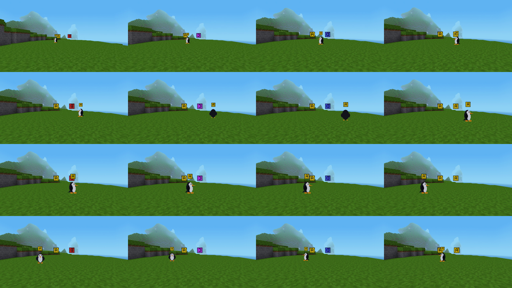

Eval: luanti_org__luanti_15105_mm
18 of 19 dimensions score 5. Dimension 16 (Difficulty) scores 2, [Fail - Trial Threshold Not Met]. The no-image result is fine (0/3), but 2 of the 4 with-image runs passed (2ENEfK7 and UfhjB7C, both 1.0). Option A needs exactly 1/4, and with 7 trials Option B does not apply. The Attempt1 dimension 4 fail is fixed. The text now names the defect classes ('they show the wrong picture, or show a picture the wrong way round'), and the false line is now true ('are set up to display the same thing'). Three of the four with-image runs read the symptom set correctly. Only instruction.md and task.toml (difficulty_explanation only) differ from Attempt1. Every other bundle file is identical apart from line endings, all 16 files match the trial manifest sha256, and the CB Oracle (1.0) and Nop (0.0) share the with-image task checksum a42b57bd. Fix: get a valid trial set on this same bundle. Either run pass@4 again until exactly 1/4 passes, or run a fresh pass@8 with images for Option B (1–2/8). If the bundle is unchanged, the 3 no-image runs stay valid.
Scorecard
Every dimension in rubric order. Click a cell to see what is wrong (or the evidence, if it passed).
python -I py_compile of verifier.py passes. recording.mp4 has sha256 5d5a0bf7…, byte-identical to Attempt1, where it decoded as h264 1280x720, 30 fps, 32.0 s. Extra files are allowed: README.md and environment/bugs/bug_01..04.patch (injected bugs).Tasks/ and Trials/. Trials/ holds 7 runs. without_images/ has 3 (M8o3kxE, Qyo6TNV, i5UusEF) and with_images/ has 4 (2ENEfK7, UfhjB7C, iUBdXUS, jYpKcuz; job config n_attempts 4). The count is valid. The pass rate is graded under dimension 16./app/.harbor_assets/ was empty (M8o3kxE step 21, Qyo6TNV step 28, i5UusEF step 16). With the video, 2ENEfK7 wrote 'Left element … Its front stays on frame A when it should animate', and UfhjB7C wrote 'the right element cycling through letters was actually correct. The bugs were the elements that didn't animate'. The image path is /app/.harbor_assets/recording.mp4 (Dockerfile line 68 COPY assets/recording.mp4 /app/.harbor_assets/). Leak check of the new wording: 'wrong picture' and 'the wrong way round' are symptom classes. They name no repo, URL, file, function or mechanism. The image hygiene is unchanged from Attempt1: a single harbor_base commit, uniform mtimes, and bug patches deleted in the same RUN.- 'two floating elements … a smaller floating element … the penguin' | text: 'do not display what they should: they show the wrong picture, or show a picture the wrong way round' (the generic phrase is followed at once by two defect classes) | text: 'Each of these elements displays exactly what it was set up to display, at every moment and from every side' + 'Seen from the front, all three floating elements are set up to display the same thing' | an in-scene comparison: the three floating elements are stated to share one set-up, so each one is the reference for the others ('like the correct ones next to them') | which element, when, from which side, frozen vs cycling | yes. The Attempt1 false claim ('display the same thing') now reads 'are set up to display the same thing', which is true. The four defect kinds fit the two stated classes: a frozen frame and the penguin's swapped side are a wrong picture; the mirrored billboard and back face are a picture the wrong way round.
Rubric checks: (1) instruction check passes. The elements are named, and the defect is stated in text. Stating the exact expected result ('they should animate') would give away the defect-1 clue and make no-image runs pass (see memory/Attempt2), so pointing to the shared set-up is the allowed form. (2) Symptom specificity passes. The generic phrase does not stand alone; the defect classes come right after it. (3) Image dependency passes. Which board, the timing and the back-side view are left to the video.
With-image trajectories, all four read: 2ENEfK7 (pass, step 101) named all 5 symptoms correctly. UfhjB7C (pass, step 65): 'the right element cycling through letters was actually correct'. iUBdXUS (fail, step 40): 'all three elements are set up with the same animation. The left flat element and the carried element stayed stuck on "A"'. It read the animation symptoms correctly but skipped the billboard mirror after deciding 'Billboard rendering matches upstream' (step 35), which is code recall, not a misreading of the text. jYpKcuz (fail, step 42) blamed the right board's changing letters on a facing-direction sprite ('made the right element step through its pictures in the wrong order as it turned') and never flagged the left board's static A. It did flag the carried board's static letter as a defect ('never changed as the penguin turned'). It voiced no doubt about which behavior was intended.
Naming table: file | role | what the frames show | claims | true? | agents confused?
- recording.mp4 | bug_video | the post-injection base state with all 5 defects. 0:00–0:15: the left upright board stays on yellow A; the right billboard cycles A→B→C→D with B, C and D mirrored; the carried board stays on A; the penguin shows its back while walking towards the camera. 0:23–0:31 (from behind): the left board's back shows a mirrored green E | neutral name; role, description and scenario say bug video, captured_from_repo | true. The new line 'are set up to display the same thing' is true of the scene set-up. | no. All 4 with-image runs treated the clip as the bug state. jYpKcuz's misdiagnosis (dim 4) concerns which board misbehaves, not which asset is the bug.
f2p vs asset (steps 1–4), cross-checked with the Attempt3 runs on this image: nop fails all 7 f2p. iUBdXUS fixed defects 1, 3, 4 and 5 but not 2, and failed only sprite_texture_is_not_mirrored, so that f2p grades the mirrored billboard (B/C/D in the video). jYpKcuz fixed 2, 3 and 4 but not 1 or 5, and failed upright_sprite_animates, upright_sprite_follows_set_sprite, attached_sprite_animates and attached_upright_sprite_animates, so those grade the frozen left and carried boards. i5UusEF (no-image) also missed the yaw sign and failed camera_facing_sprite_shows_the_side_facing_the_camera, which is the penguin's swapped side. 2ENEfK7 and UfhjB7C fixed what the video shows with their own patches and passed 11/11. Every f2p tracks a defect shown in the video. Step 7: all 4 injected defects are pictured, and upright_sprite_follows_set_sprite is the upstream #15105 path (set_sprite on an upright_sprite), the same mechanism as the frozen left board.
COPY assets/recording.mp4 /app/.harbor_assets/. All four references agree.diff -rq --strip-trailing-cr), and Attempt1's local check gave git apply --check /solution/fix.patch → OK at harbor_base. For this checksum, the CB Oracle (a42b57bd) applied the patch through solve.sh, built, and scored 1.0. No local Docker re-run was done this time, because no file that affects the image changed.diff --git paths: irr/src/CBillboardSceneNode.cpp, src/client/content_cao.cpp, src/client/mesh.cpp, src/client/mesh.h. files_edited lists the same 4 paths, so the sets are equal. No test, doc, lockfile or changeset paths. Unchanged from Attempt1.- Defect 1: setDirty(EBT_VERTEX) inside mesh.cpp's setMeshBufferTextureCoords, without moving the helper (plausible). 2ENEfK7 and UfhjB7C did this: 11/11. The golden instead moves the helper into content_cao.cpp.
- Defect 1: skip the EHM_STATIC hint for upright_sprite and setDirty in updateTexturePos (valid). iUBdXUS did this and passed upright_sprite_animates, upright_sprite_follows_set_sprite and attached_upright_sprite_animates.
- Defect 2: swap U in the billboard ctor (golden; 2ENEfK7, UfhjB7C, jYpKcuz and all 3 no-image runs pass sprite_texture_is_not_mirrored).
- Defect 3: re-order the back-quad positions with normal winding (all 7 trials pass back_is_not_mirrored).
- Defect 4:
mob_dir - yaw, or jYpKcuz's getSpriteYaw() world-space variant (both pass camera_facing).- Defect 5: frame timer moved out of the not-attached branch (iUBdXUS passes attached_sprite_animates).
Structure-level checks are unchanged from Attempt1: a ±50% rate band, ≥70% sync with the reference, and majority votes. The rejected forms (swapped select_x columns, an upside-down billboard, a doubled timer) are compensations, not correct fixes.
Trial cross-check: every f2p failure in the 5 failing Attempt3 runs is on a defect the agent never touched. iUBdXUS's one fail is the billboard, which its patch does not modify. The other 4 failing runs fail with 'color stopped changing (animation is frozen)' on the animation f2p, and their patches touch no buffer or timer code there. None is an equivalent form being rejected.
+ instead of - on the yaw in select_x_by_camera, and the frame timer inside the not-attached branch. Each fix is a restoration a real developer would write, and 2 with-image runs wrote them independently. All 4 injected defects are pictured.Delivery gate
Process checks run locally or read from the submitted runs. Each failure is scored under the dimension it belongs to, not as an extra dimension.
Trials
3 no-image runs (pass@3, all must fail) and 4 with-image runs (pass@4, exactly 1 must pass). Rewards come from each run's verifier/reward.txt.
| Trial | Mode | Reward | f2p | p2p | Min | Failed tests |
|---|---|---|---|---|---|---|
task_without_images__M8o3kxE | no-image | 0.0 | 3/7 | 4/4 | 5.3 | upright_sprite_animates upright_sprite_follows_set_sprite attached_sprite_animates attached_upright_sprite_animates |
task_without_images__Qyo6TNV | no-image | 0.0 | 3/7 | 4/4 | 5.7 | upright_sprite_animates upright_sprite_follows_set_sprite attached_sprite_animates attached_upright_sprite_animates |
task_without_images__i5UusEF | no-image | 0.0 | 2/7 | 4/4 | 5.2 | upright_sprite_animates upright_sprite_follows_set_sprite camera_facing_sprite_shows_the_side_facing_the_camera attached_sprite_animates attached_upright_sprite_animates |
task_with_images__2ENEfK7 | with-image | 1.0 | 7/7 | 4/4 | 22.7 | — |
task_with_images__UfhjB7C | with-image | 1.0 | 7/7 | 4/4 | 14.7 | — |
task_with_images__iUBdXUS | with-image | 0.0 | 6/7 | 4/4 | 9.2 | sprite_texture_is_not_mirrored |
task_with_images__jYpKcuz | with-image | 0.0 | 3/7 | 4/4 | 8.6 | upright_sprite_animates upright_sprite_follows_set_sprite attached_sprite_animates attached_upright_sprite_animates |
Issues & suggested fixes
Hardening – Difficulty (Model Trial Fails) 2 · [Fail - Trial Threshold Not Met]
What is wrong. With-image pass@4 is 2/4 (2ENEfK7 and UfhjB7C both 1.0). The rubric's Option A needs exactly 1 pass and 3 fails. Option B needs 11 trials (3 no-image + 8 with-image), so it does not apply to a 7-trial submission.
Suggested fix. Keep the bundle as it is (checksum a42b57bd) so the 0/3 no-image result stays valid, and choose one: (a) run pass@4 with images again and submit it only if exactly 1/4 passes; or (b) run a fresh pass@8 with images and submit 3 + 8 = 11 trials if 1–2/8 pass (Option B in the V27 rubric; the Attempter Guidelines describe only Option A, but the rubric decides the score). If it keeps landing at 2 or more, harden the with-image path without naming time variation (see dim 4). Any edit to instruction.md or the tests changes the checksum, so all trials must be re-run.
Dimension details
1. Structure – Task Bundle Files 5 · Pass
| Evidence | All 11 fixed files are present and non-empty: task.toml 7365 B, instruction.md 1468, evidence_bundle.json 2317, environment/Dockerfile 3203, environment/assets/ASSET_MANIFEST.json 641, solution/fix.patch 4767, solution/solve.sh 349, tests/config.json 1158, tests/test.patch 32626, tests/test.sh 9502, tests/verifier.py 4816. The 3 JSON files parse, task.toml parses with tomllib, and python -I py_compile of verifier.py passes. recording.mp4 has sha256 5d5a0bf7…, byte-identical to Attempt1, where it decoded as h264 1280x720, 30 fps, 32.0 s. Extra files are allowed: README.md and environment/bugs/bug_01..04.patch (injected bugs). |
|---|---|
| What is wrong | Nothing found. |
| Suggested fix | None. |
2. Structure – Deliverables & Packaging 5 · Pass
| Evidence | Attempt3/ holds Tasks/ (capital T) and Trials/ as root-level siblings, plus Oracle/, Nop/, Check/ and Analyze/. Packed for this review as Tasks.tar.gz and Trials.tar.gz in this review folder, they unpack to Tasks/ and Trials/. Trials/ holds 7 runs. without_images/ has 3 (M8o3kxE, Qyo6TNV, i5UusEF) and with_images/ has 4 (2ENEfK7, UfhjB7C, iUBdXUS, jYpKcuz; job config n_attempts 4). The count is valid. The pass rate is graded under dimension 16. |
|---|---|
| What is wrong | Nothing found. |
| Suggested fix | None. Upload Tasks.tar.gz and Trials.tar.gz as two separate archives with those top-level folder names. |
3. Instruction – Requires Visual Evidence 5 · Pass
| Evidence | From the text alone, a developer learns that 'floating elements and the penguin' sometimes 'show the wrong picture, or show a picture the wrong way round', across 'separate, independent defects'. The text gives no element type (sprite, upright_sprite, select_x_by_camera), and it never says that anything changes over time. The no-image runs show the video is needed. 0/3 passed. All 3 failed upright_sprite_animates, upright_sprite_follows_set_sprite, attached_sprite_animates and attached_upright_sprite_animates, so none found defect 1 (frozen upright_sprite, #15105) or defect 5 (frozen attached sprite). All 3 say /app/.harbor_assets/ was empty (M8o3kxE step 21, Qyo6TNV step 28, i5UusEF step 16). With the video, 2ENEfK7 wrote 'Left element … Its front stays on frame A when it should animate', and UfhjB7C wrote 'the right element cycling through letters was actually correct. The bugs were the elements that didn't animate'. The image path is /app/.harbor_assets/recording.mp4 (Dockerfile line 68 COPY assets/recording.mp4 /app/.harbor_assets/). Leak check of the new wording: 'wrong picture' and 'the wrong way round' are symptom classes. They name no repo, URL, file, function or mechanism. The image hygiene is unchanged from Attempt1: a single harbor_base commit, uniform mtimes, and bug patches deleted in the same RUN. |
|---|---|
| What is wrong | Nothing found. Non-graded: a code audit still finds the mirror defects without the video. All 3 no-image runs fixed the billboard U flip and the mirrored back quad, and 2 of 3 fixed the select_x yaw sign. The video is needed only for the two animation defects, which is enough for this dimension. |
| Suggested fix | None required. |
4. Instruction – Symptom Specificity 5 · Pass
| Evidence | Table: element | defect (text or image?) | expected (text or image?) | comparison pointed to | clue left to image | described correctly? - 'two floating elements … a smaller floating element … the penguin' | text: 'do not display what they should: they show the wrong picture, or show a picture the wrong way round' (the generic phrase is followed at once by two defect classes) | text: 'Each of these elements displays exactly what it was set up to display, at every moment and from every side' + 'Seen from the front, all three floating elements are set up to display the same thing' | an in-scene comparison: the three floating elements are stated to share one set-up, so each one is the reference for the others ('like the correct ones next to them') | which element, when, from which side, frozen vs cycling | yes. The Attempt1 false claim ('display the same thing') now reads 'are set up to display the same thing', which is true. The four defect kinds fit the two stated classes: a frozen frame and the penguin's swapped side are a wrong picture; the mirrored billboard and back face are a picture the wrong way round. Rubric checks: (1) instruction check passes. The elements are named, and the defect is stated in text. Stating the exact expected result ('they should animate') would give away the defect-1 clue and make no-image runs pass (see memory/Attempt2), so pointing to the shared set-up is the allowed form. (2) Symptom specificity passes. The generic phrase does not stand alone; the defect classes come right after it. (3) Image dependency passes. Which board, the timing and the back-side view are left to the video. With-image trajectories, all four read: 2ENEfK7 (pass, step 101) named all 5 symptoms correctly. UfhjB7C (pass, step 65): 'the right element cycling through letters was actually correct'. iUBdXUS (fail, step 40): 'all three elements are set up with the same animation. The left flat element and the carried element stayed stuck on "A"'. It read the animation symptoms correctly but skipped the billboard mirror after deciding 'Billboard rendering matches upstream' (step 35), which is code recall, not a misreading of the text. jYpKcuz (fail, step 42) blamed the right board's changing letters on a facing-direction sprite ('made the right element step through its pictures in the wrong order as it turned') and never flagged the left board's static A. It did flag the carried board's static letter as a defect ('never changed as the penguin turned'). It voiced no doubt about which behavior was intended. |
|---|---|
| What is wrong | Nothing found. Non-graded risk: jYpKcuz (1 of 4) took the right board's correct cycling for a facing-direction effect and missed the frozen left board. That is a misdiagnosis, not the 'agents couldn't tell the bug from intended behavior' pattern: it gave no explicit doubt, it treated the carried board's static letter as a defect, and 3 of 4 runs read the same text and video correctly. A strict reviewer could still cite it. |
| Suggested fix | None required. Do not go back to the Attempt1 wording ('do not display what they should' with nothing after it). If you change the text, never name time variation, frames or freezing, or no-image runs will start passing. Any edit to instruction.md changes the checksum, so every trial must be re-run. |
5. Instruction – Task Type 5 · Pass
| Evidence | task_type = temporal_interaction ('a defect that only appears across a sequence of interactions / state transitions'). The text describes a 32 s clip where the defects show up 'at several moments' as the scene runs and the camera walks around ('From about 0:15 the camera walks around the left floating element'). It asks that each element display correctly 'at every moment and from every side'. The defects depend on time (frames that never advance) and on view (the back face, the penguin's heading), which fits the type. The new symptom classes do not move the text out of this type. |
|---|---|
| What is wrong | Nothing found. |
| Suggested fix | None. |
6. Image – Evidence Quality 5 · Pass
| Evidence | The asset is unchanged from Attempt1: recording.mp4 sha256 5d5a0bf7…, 1947703 B. Contact sheets are in evidence/. Naming table: file | role | what the frames show | claims | true? | agents confused? - recording.mp4 | bug_video | the post-injection base state with all 5 defects. 0:00–0:15: the left upright board stays on yellow A; the right billboard cycles A→B→C→D with B, C and D mirrored; the carried board stays on A; the penguin shows its back while walking towards the camera. 0:23–0:31 (from behind): the left board's back shows a mirrored green E | neutral name; role, description and scenario say bug video, captured_from_repo | true. The new line 'are set up to display the same thing' is true of the scene set-up. | no. All 4 with-image runs treated the clip as the bug state. jYpKcuz's misdiagnosis (dim 4) concerns which board misbehaves, not which asset is the bug. f2p vs asset (steps 1–4), cross-checked with the Attempt3 runs on this image: nop fails all 7 f2p. iUBdXUS fixed defects 1, 3, 4 and 5 but not 2, and failed only sprite_texture_is_not_mirrored, so that f2p grades the mirrored billboard (B/C/D in the video). jYpKcuz fixed 2, 3 and 4 but not 1 or 5, and failed upright_sprite_animates, upright_sprite_follows_set_sprite, attached_sprite_animates and attached_upright_sprite_animates, so those grade the frozen left and carried boards. i5UusEF (no-image) also missed the yaw sign and failed camera_facing_sprite_shows_the_side_facing_the_camera, which is the penguin's swapped side. 2ENEfK7 and UfhjB7C fixed what the video shows with their own patches and passed 11/11. Every f2p tracks a defect shown in the video. Step 7: all 4 injected defects are pictured, and upright_sprite_follows_set_sprite is the upstream #15105 path (set_sprite on an upright_sprite), the same mechanism as the frozen left board. |
|---|---|
| What is wrong | Nothing found. |
| Suggested fix | None. |
7. Metadata – task_type 5 · Pass
| Evidence | temporal_interaction is one of the seven values. The asset is a 32 s video whose defects appear across state changes: animation frames that should advance, a camera walk-around that reveals the back face, and a walking subject whose shown side depends on its heading. visual_bug_fix would also be defensible, which the rubric does not penalize. |
|---|---|
| What is wrong | Nothing found. |
| Suggested fix | None. |
8. Evidence – Chain Consistency 5 · Pass
| Evidence | File: environment/assets/recording.mp4, 1947703 B, sha256 5d5a0bf76ef7f1ff2846b97f468641786317e110dfc354e1732c9d80194f8ed9 (computed). ASSET_MANIFEST.json: file recording.mp4, container_path /app/.harbor_assets/recording.mp4, same bytes and sha256. evidence_bundle.json: container_path /app/.harbor_assets/recording.mp4, same bytes and sha256, role bug_video, source_kind captured_from_repo. instruction.md: '/app/.harbor_assets/recording.mp4'. Dockerfile line 68: COPY assets/recording.mp4 /app/.harbor_assets/. All four references agree. |
|---|---|
| What is wrong | Nothing found. |
| Suggested fix | None. |
9. Golden Fix – Applies Cleanly 5 · Pass
| Evidence | solution/fix.patch, solve.sh, the Dockerfile and bugs/*.patch are identical to Attempt1 (diff -rq --strip-trailing-cr), and Attempt1's local check gave git apply --check /solution/fix.patch → OK at harbor_base. For this checksum, the CB Oracle (a42b57bd) applied the patch through solve.sh, built, and scored 1.0. No local Docker re-run was done this time, because no file that affects the image changed. |
|---|---|
| What is wrong | Nothing found. |
| Suggested fix | None. |
10. Golden Fix – Source-Only Scope 5 · Pass
| Evidence | fix.patch diff --git paths: irr/src/CBillboardSceneNode.cpp, src/client/content_cao.cpp, src/client/mesh.cpp, src/client/mesh.h. files_edited lists the same 4 paths, so the sets are equal. No test, doc, lockfile or changeset paths. Unchanged from Attempt1. |
|---|---|
| What is wrong | Nothing found. |
| Suggested fix | None. |
11. Tests – Implementation Overfit 5 · Pass
| Evidence | Every assertion classifies rendered pixels, taking the nearest palette colour in a fixed screen box. Nothing compares source strings, names or bytes, so no value-level output-form issue arises. Equivalence table (alternative | valid/plausible | result on this image): - Defect 1: setDirty(EBT_VERTEX) inside mesh.cpp's setMeshBufferTextureCoords, without moving the helper (plausible). 2ENEfK7 and UfhjB7C did this: 11/11. The golden instead moves the helper into content_cao.cpp. - Defect 1: skip the EHM_STATIC hint for upright_sprite and setDirty in updateTexturePos (valid). iUBdXUS did this and passed upright_sprite_animates, upright_sprite_follows_set_sprite and attached_upright_sprite_animates. - Defect 2: swap U in the billboard ctor (golden; 2ENEfK7, UfhjB7C, jYpKcuz and all 3 no-image runs pass sprite_texture_is_not_mirrored). - Defect 3: re-order the back-quad positions with normal winding (all 7 trials pass back_is_not_mirrored). - Defect 4: mob_dir - yaw, or jYpKcuz's getSpriteYaw() world-space variant (both pass camera_facing).- Defect 5: frame timer moved out of the not-attached branch (iUBdXUS passes attached_sprite_animates). Structure-level checks are unchanged from Attempt1: a ±50% rate band, ≥70% sync with the reference, and majority votes. The rejected forms (swapped select_x columns, an upside-down billboard, a doubled timer) are compensations, not correct fixes. Trial cross-check: every f2p failure in the 5 failing Attempt3 runs is on a defect the agent never touched. iUBdXUS's one fail is the billboard, which its patch does not modify. The other 4 failing runs fail with 'color stopped changing (animation is frozen)' on the animation f2p, and their patches touch no buffer or timer code there. None is an equivalent form being rejected. |
|---|---|
| What is wrong | Nothing found. |
| Suggested fix | None. |
12. Tests – f2p/p2p Identifier Validity 5 · Pass
| Evidence | task.toml [metadata] f2p (7) and p2p (4) equal tests/config.json f2p (7) and p2p (4) (python equality True). The CB Oracle JUnit has 11 testcases (classname sprite_probe). reward_detail.json resolves every id ('f2p::sprite_probe <name>' / 'p2p::sprite_probe <name>'), with no 'missing' or 'ambiguous' entry in any of the 9 Attempt3 runs. |
|---|---|
| What is wrong | Nothing found. |
| Suggested fix | None. |
13. Tests – p2p Classification 5 · Pass
| Evidence | CB Nop: p2p 4/4 pass (reference_sprite_animates, upright_sprite_renders_a_palette_color, reference_sprite_renders_a_palette_color, upright_sprite_front_is_not_mirrored). CB Oracle: 4/4. All 7 Attempt3 trials: 4/4. This matches the Attempt1 local nop/oracle runs on identical test files. |
|---|---|
| What is wrong | Nothing found. |
| Suggested fix | None. |
14. Tests – Discriminating (f2p) 5 · Pass
| Evidence | CB Nop (checksum a42b57bd): all 7 f2p fail. CB Oracle: all 7 pass. Attempt1 local nop and oracle ×2 showed the same split on identical tests, patches and image. |
|---|---|
| What is wrong | Nothing found. |
| Suggested fix | None. |
15. Tests – Determinism 5 · Pass
| Evidence | The setup is headless and pinned: Xvfb with Mesa llvmpipe, the devtest game restored from harbor_base, fixed probe textures, a fixed world and fps_max 30. test.sh installs nothing, so verifier network_mode 'public' raises no issue. The time-based probes have wide tolerances. The timing-sensitive p2p reference_sprite_animates passed in all 9 Attempt3 runs (7 trials, Oracle, Nop) and in all 12 Attempt1 runs, 21/21 in total. The Attempt1 local oracle re-run gave identical per-test results. |
|---|---|
| What is wrong | Nothing found. Non-graded: the probes sample wall-clock time under a software renderer, so a heavily loaded grader could still drift. |
| Suggested fix | None. |
16. Hardening – Difficulty (Model Trial Fails) 2 · Fail
[Fail - Trial Threshold Not Met]
| Evidence | 7 trials, so only Option A applies. No-image (3): M8o3kxE 0.0 (f2p 3/7), Qyo6TNV 0.0 (3/7), i5UusEF 0.0 (2/7), all failing as required. The trajectories confirm /app/.harbor_assets/ was empty in each. With-image (4): 2ENEfK7 1.0 (7/7), UfhjB7C 1.0 (7/7), iUBdXUS 0.0 (6/7), jYpKcuz 0.0 (3/7). That is 2/4 passing, and Option A needs exactly 1/4. Runs are told apart by job path: trial_tasks/…/task_without_images (checksum 751ef0c4, images stripped) vs task_with_images (a42b57bd). Model anthropic/claude-opus-5-5. Run times 5.2–22.7 min (informational). For context: Attempt1 got 1/4 with images under the older, vaguer wording. |
|---|---|
| What is wrong | With-image pass@4 is 2/4 (2ENEfK7 and UfhjB7C both 1.0). The rubric's Option A needs exactly 1 pass and 3 fails. Option B needs 11 trials (3 no-image + 8 with-image), so it does not apply to a 7-trial submission. |
| Suggested fix | Keep the bundle as it is (checksum a42b57bd) so the 0/3 no-image result stays valid, and choose one: (a) run pass@4 with images again and submit it only if exactly 1/4 passes; or (b) run a fresh pass@8 with images and submit 3 + 8 = 11 trials if 1–2/8 pass (Option B in the V27 rubric; the Attempter Guidelines describe only Option A, but the rubric decides the score). If it keeps landing at 2 or more, harden the with-image path without naming time variation (see dim 4). Any edit to instruction.md or the tests changes the checksum, so all trials must be re-run. |
17. Hardening – Real & Feasible 5 · Pass
| Evidence | Defect 1 is the real upstream issue #15105: the upright_sprite texcoords are rewritten in a static GPU buffer that is never marked dirty. The golden mirrors upstream's setDirty fix. The 4 injected bugs are coherent one-line regressions: the billboard U flipped in the ctor, the back quad reusing the front's corners, + instead of - on the yaw in select_x_by_camera, and the frame timer inside the not-attached branch. Each fix is a restoration a real developer would write, and 2 with-image runs wrote them independently. All 4 injected defects are pictured. |
|---|---|
| What is wrong | Nothing found. |
| Suggested fix | None. |
18. Gate – Oracle/Nop 5 · Pass
| Evidence | CB Oracle (2U2r8EF): reward 1.0, f2p 7/7, p2p 4/4. CB Nop (VPzXXVU): reward 0.0, f2p 0/7, p2p 4/4. Both carry task checksum a42b57bd…, the same as the with-image trials. Each test-stdout has all stage banners ('== captured submission.patch', '== applying test.patch ==', '== running f2p + p2p tests ==', '== computing reward ==', 'reward='), with 0 'could not apply test.patch'. The Attempt1 review's local runs (oracle 1.0 ×2 with identical per-test results, nop 0.0) were on a byte-identical Dockerfile, bugs, fix.patch, solve.sh, test.patch, test.sh, verifier.py and config.json. Only instruction.md and task.toml's difficulty_explanation differ, and neither reaches the build or the verifier. The local runs were not repeated for Attempt3. |
|---|---|
| What is wrong | Nothing found. |
| Suggested fix | None. |
19. Unauditable 5 · Pass
| Evidence | A complete, coherent bundle with runs that could be audited end to end. |
|---|---|
| What is wrong | Nothing found. |
| Suggested fix | None. |
Visual evidence
